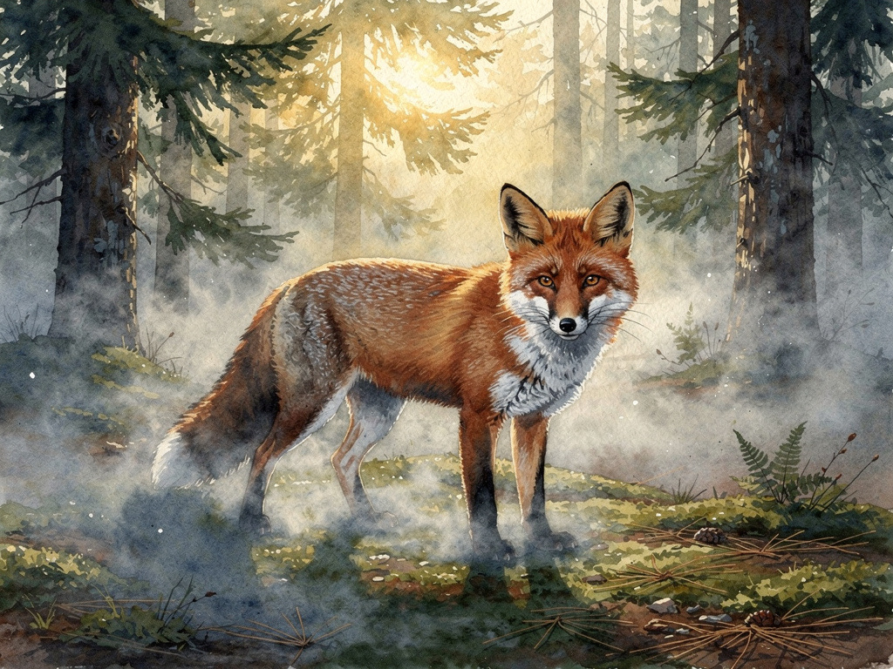
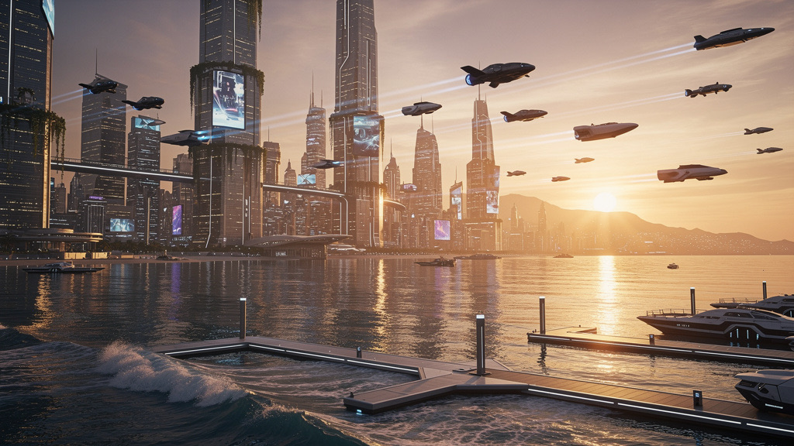
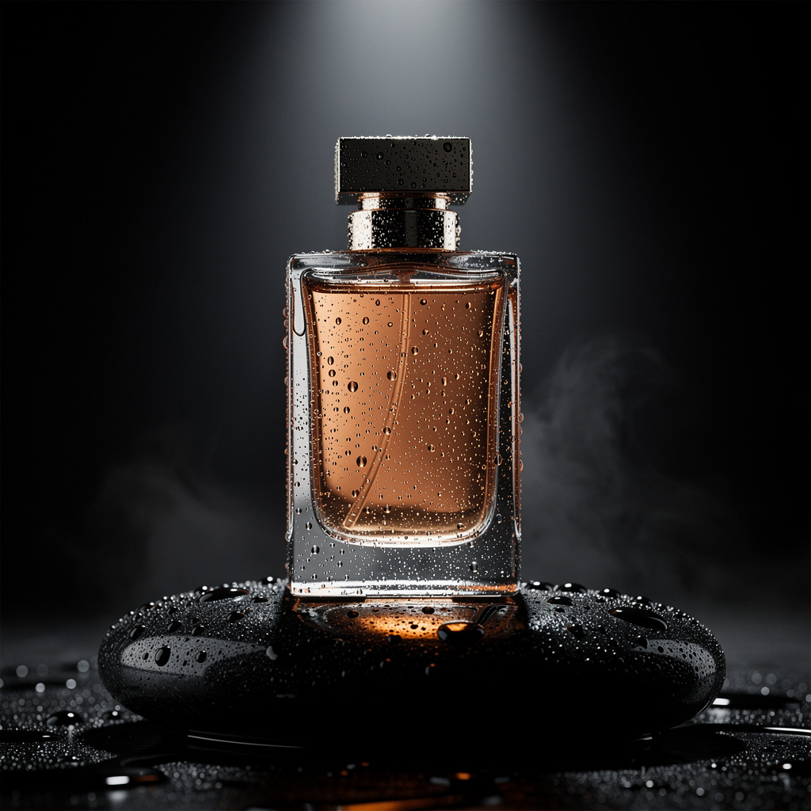

Every image below is exactly what LUMEN returned — no retouching, no cherry-picking from hundreds. The caption is the actual prompt.
modern coffee shop storefront at dusk, warm glowing interior, hanging sign that reads "GOLDEN HOUR", silhouettes of customers, commercial photographygourmet smash burger with melting cheddar, dark slate background, dramatic side light, steam rising, restaurant menu food photographysun-drenched modern living room, floor-to-ceiling windows, scandinavian furniture, architectural photography for a property listingwhite designer sneaker floating above a pastel podium, soft studio lighting, clean e-commerce hero shotrose gold skincare serum bottle on silk fabric with scattered rose petals, minimal label that reads "GLOW", soft luxury advertising photographymoody cinematic artwork of a lone figure in a long coat walking into coastal fog at dusk, teal and amber palette, vast empty sky for cover typographya cozy ramen shop on a rainy Tokyo night, glowing sign that reads "RAMEN", an elderly chef serving a steaming bowl at the counter, wet street reflections, cinematic — Studio modeportrait of a woman with short silver hair, soft window light, freckles, shallow depth of field, editorial photographya warrior with a huge sword blade, fantasy character artisometric cutaway illustration of a cozy cyberpunk apartment, neon signs, rain outside the window, detailed miniature stylea vintage espresso machine on a marble counter, morning sunlight through a cafe window, steam rising, warm cinematic tones

a watercolor painting of a red fox in a misty pine forest, soft morning light, loose brushworka golden retriever wearing an astronaut helmet, studio portrait, dramatic rim light

futuristic coastal city skyline at golden hour, flying vehicles, cinematic wide shot

luxury perfume bottle on wet black stone, water droplets, dramatic spotlight, product photographya red apple on a wooden table, studio light